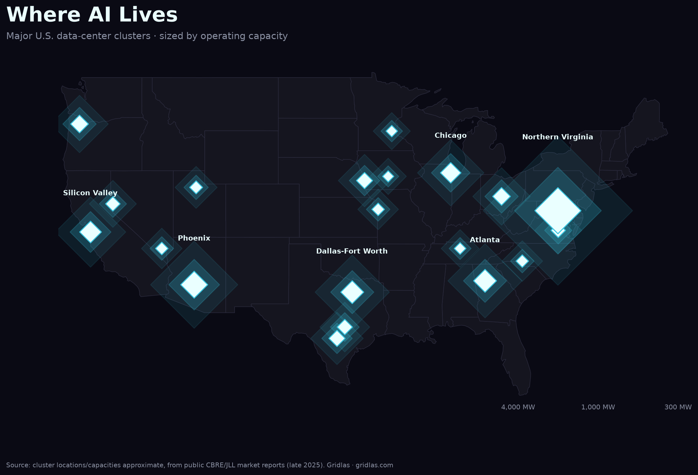

Home / Data centers by region
AI's electricity load isn't spread evenly — it concentrates onto a handful of grids. Here's where, and why each market matters.
Data centers consumed 4.4% of U.S. electricity in 2023, a share LBNL projects will reach 6.7%–12% by 2028. But the national average hides the real story: the load lands on specific grids, around the clock, faster than utilities have ever had to respond. These five markets are where that collision is sharpest.

More markets: Silicon Valley & Santa Clara — the mature, power-capped market · Chicago & Illinois — the nuclear-powered Midwest hub · New York Tri-State — the financial-latency hub · Hillsboro & Oregon — the Pacific NW hydro & fiber hub · Memphis & xAI Colossus — the grid bottleneck, in the open · Iowa — the wind-powered heartland cluster · Salt Lake City & Utah — the state that legislated the workaround · Reno & Northern Nevada — the speed-to-power frontier →
Want the full picture? The Gridlas report has all five regional deep-dives in depth, the ranked metro tables, high-res maps, a 12-month outlook, and the underlying dataset (CSV/GeoJSON) — built entirely from public EIA, LBNL & ERCOT data.
Get the report →